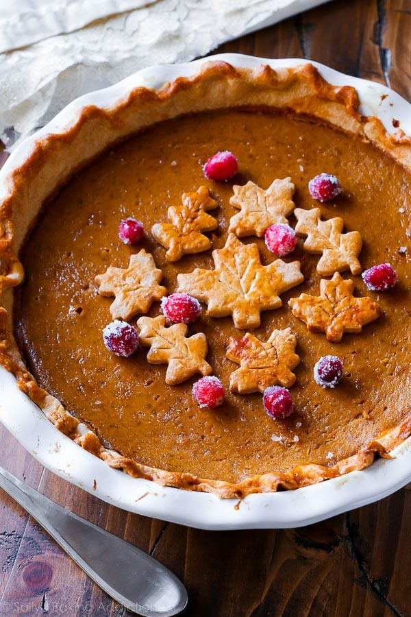

Pumpkin Pie!

This Pumpkin Pie is an absolute family favorite! My friends keep asking me for the recipe so I made this Webpage
Ingredients Needed for Recipe:
- Pie Dough
- egg wash: 1 large egg beaten with tablespoon of milk.
- 2 cups of Pumpkin puree
- 3 large eggs
- 1 and 1/4 cups packed light brown sugar
- 1 tablespoon cornstarch
- 1/2 teaspoon salt
- 1 and 1/2 teaspoon ground cinnamon
- 1/2 teaspoon ground ginger*
- 1/4 teaspoon nutmeg
- 1/8 teaspoon ground cloves
- 1/8 teaspoon ground black pepper
- 1 cup heavy cream
- 1/4 cup milk
Directions:
- If garnishing with sugared cranberries, make those first: Place cranberries in a large bowl; set aside. In a medium saucepan, bring 1 cup of sugar and the water to a boil and whisk until the sugar has dissolved. Remove pan from the heat and allow to cool for 5 minutes. Pour sugar syrup over the cranberries and stir. Let the cranberries sit at room temperature or in the refrigerator for 6 hours or overnight (ideal). You’ll notice the sugar syrup is quite thick after this amount of time. Drain the cranberries from the syrup and pour 1 cup of sugar on top. Toss the cranberries, coating them all the way around. Pour the sugared cranberries on a parchment paper or silicone baking mat-lined baking sheet and let them dry for at least 2 hours at room temperature or in the refrigerator. You’ll have extra, but they’re great for eating or as garnish on other dishes. Cover tightly and store in the refrigerator for up to 3 days.
- Make the pie crust through step 5 according to my directions and video tutorial in my pie crust recipe. Or use your favorite pie dough or store-bought.
- Preheat oven to 375°F (190°C).
- Roll out the chilled pie crust: Remove 1 disc of pie dough from the refrigerator. On a lightly floured work surface, roll the dough out into a 12-inch circle. Make sure to turn the dough about a quarter turn after every few rolls. Carefully place the dough into a 9-inch deep dish pie dish. Tuck it in with your fingers, making sure it’s tightly pressed into the pie dish. Fold any dough overhang back into the dish to form a thick rim around the edges. Crimp the edges with a fork or flute the edges with your fingers. Brush edges lightly with egg wash mixture.
- Par-bake the crust: Line the pie crust with parchment paper. Crunching up the parchment paper is helpful so that you can easily shape it into the crust. Fill with pie weights or dried beans. (Note that you will need at least 2 standard sets of pie weights to fit.) Make sure the weights/beans are evenly distributed around the pie dish. Par-bake the crust for 10 minutes. Carefully remove the parchment paper/pie weights. Prick the bottom of the crust all over with a fork to create steam vents and return crust (without weights) to the oven for 7-8 more minutes or until the bottom is *just* starting to brown. (Review this how to par-bake pie crust page if you need extra help with this par-baking step.)
- Make the pumpkin pie filling: Whisk the pumpkin, 3 eggs, and brown sugar together until combined. Add the cornstarch, salt, cinnamon, ginger, nutmeg, cloves, pepper, heavy cream, and milk. Vigorously whisk until everything is combined.
- Pour pumpkin pie filling into the warm crust. Only fill the crust about 3/4 of the way up. (If using a deep dish pie dish as instructed, you should only have a little filling leftover. Use extra to make mini pies with leftover pie dough scraps if you’d like.) Bake the pie until the center is almost set, about 55-60 minutes give or take. A small part of the center will be wobbly – that’s ok. After 25 minutes of baking, be sure to cover the edges of the crust with aluminum foil or use a pie crust shield to prevent the edges from getting too brown. Check for doneness at minute 50, and then 55, and then 60, etc
- Once done, transfer the pie to a wire rack and allow to cool completely for at least 3 hours before garnishing and serving.
- Decorate with sugared cranberries and pie crust leaves (see note). You’ll definitely have leftover cranberries… they’re tasty for snacking. Serve pie with whipped cream if desired.
- Cover leftovers tightly and store in the refrigerator for up to 5 days.